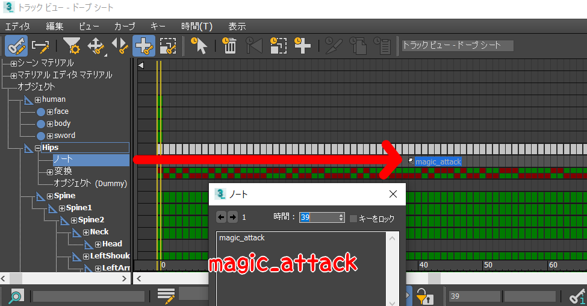

- クラス宣言と#include(上級者向け)
7.1 アニメーションキーの設定
7.2 アニメーションイベント
- //Player.cpp/Player::MakeFireBall()/Player::OnAnimationEvent()
- void Player::MakeFireBall()
- {
- //ファイヤーボールを作成する。
- FireBall* fireBall = NewGO<FireBall>(0);
- Vector3 fireBallPosition = m_position;
- //座標を少し上にする。
- fireBallPosition.y += 70.0f;
- //座標を設定する。
- fireBall->SetPosition(fireBallPosition);
- fireBall->SetRotation(m_rotation);
- //術者はプレイヤーにする。
- fireBall->SetEnMagician(FireBall::enMagician_Player);
- }
- .
- .
- .
- void Player::OnAnimationEvent(const wchar_t* clipName, const wchar_t* eventName)
- {
- //キーの名前が「attack_start」の時。
- if (wcscmp(eventName, L"attack_start") == 0) {
- //攻撃中にする。
- m_isUnderAttack = true;
- //エフェクトを発生させる。
- MakeSlashingEffect();
- }
- //キーの名前が「attack_end」の時。
- else if (wcscmp(eventName, L"attack_end") == 0) {
- //攻撃を終わる。
- m_isUnderAttack = false;
- }
- //キーの名前が「magic_attack」の時。
- else if (wcscmp(eventName, L"magic_attack") == 0) {
- //ファイヤーボールを作成する。
- MakeFireBall();
- }
- }
7.3 当たり判定
- //FireBall.h
- #pragma once
- //クラス宣言。
- class CollisionObject;
- ///<summary>
- ///ファイヤーボール。
- ///<summary>
- class FireBall : public IGameObject
- {
- public:
- .
- .
- .
- EnMagician m_enMagician = enMagician_None; //術者。
- float m_timer = 0.0; //タイマー。
- CollisionObject* m_collisionObject = nullptr; //CollisionObject。
- }
- //FireBall.cpp
- #include "stdafx.h"
- #include "FireBall.h"
- #include "sound/SoundEngine.h"
- #include "sound/SoundSource.h"
- //CollisionObjectを使用したいので、ファイルをインクルードする。
- #include "collision/CollisionObject.h"
- FireBall::FireBall()
- {
- }
- FireBall::~FireBall()
- {
- //コリジョンオブジェクトを削除する。
- DeleteGO(m_collisionObject);
- }
- bool FireBall::Start()
- {
- .
- .
- .
- //効果音を再生する。
- SoundSource* se = NewGO<SoundSource>(0);
- se->Init(1);
- se->Play(false);
- se->SetVolume(1.5f);
- //コリジョンオブジェクトを作成する。
- m_collisionObject = NewGO<CollisionObject>(0);
- //球状のコリジョンを作成する。
- m_collisionObject->CreateSphere(
- m_position, //座標。
- Quaternion::Identity, //回転。
- 35.0f //半径。
- );
- //術者がプレイヤーだったら。
- if (m_enMagician == enMagician_Player)
- {
- //名前をplayer_fireballにする。
- m_collisionObject->SetName("player_fireball");
- }
- //術者がエネミーだったら。
- else if (m_enMagician == enMagician_Enemy)
- {
- //名前をenemy_fireballにする。
- m_collisionObject->SetName("enemy_fireball");
- }
- //コリジョンオブジェクトが自動で削除されないようにする。
- m_collisionObject->SetIsEnableAutoDelete(false);
- return true;
- }
- void FireBall::Update()
- {
- //座標を設定する。
- m_position += m_moveSpeed * g_gameTime->GetFrameDeltaTime();
- //コリジョンオブジェクトに座標を設定する。
- m_collisionObject->SetPosition(m_position);
- .
- .
- .
- }
7.4 まとめ
- なし。
7.5 Tips クラス宣言と#include(上級者向け)
- //Player.h
- //CollisionObjectを使用したいので、クラス宣言する。
- class CollisionObject;
- //Enemyクラスを使用したいので、includeする。
- #include "Enemy.h"
- class Player : public IGameObject
- {
- }
- クラス宣言→ポインタ変数の宣言
- ファイルのinclude→通常変数の宣言、メンバ変数・関数の使用
この章で学ぶこと
第七章、第八章では魔法攻撃を実装していきます。
通常攻撃実装で学んだことの復習になります。

ゲームパッドのXボタンで魔法攻撃です。今はただ、アニメーションが再生されるだけです。
このアニメーションの内、手を前に突き出したタイミングで魔法を撃つように、アニメーションキーを設定しましょう。
では、3dsmaxを開いて、Assets/modelData/humanのhuman_attack.fbxを読み込んでください。
第四章を参考にアニメーションキーを設定して、tkaファイルを出力してください。

次に、アニメーションイベントの設定を行います。Player.cppのMakeFireBall関数とOnAnimationEvent関数に下記のコードを追加してください。
「FireBall」というクラスが、魔法攻撃用のクラスになります。
魔法攻撃の発生の部分は、これで完了です。続いてFireBallクラスの実装を行いましょう。
魔法攻撃の発生の部分は、これで完了です。続いてFireBallクラスの実装を行いましょう。
まず、FireBallクラスに当たり判定を追加しましょう。FireBall.hに下記のコードを追加してください。
続いて、FireBall.cppに下記のコードを追加してください。少し長いですが、頑張ってください。
できたら、実行してみてください。当たり判定が発生しているでしょうか。
今まで特定のクラスを.hで使用する際に、クラス宣言かファイルのincludeだったと思います。この2つの違いは何でしょうか。
クラス宣言は、○○クラスが存在するということを宣言しているだけです。一方ファイルのincludeは、ファイルのソースをそのままコピペしているような物です。
宣言だけかクラスの構造まで読み込んでいるか、その違いがあります。
では、以下2つのソースを見比べてみましょう。
上のソースではm_enemyは通常変数ですが、下のソースではm_enemyはポインタ変数として宣言されています。
また、上のソースでは、「不完全な型は使用できません」というエラーメッセージが出ています。
実際にプログラムを書いてみると分かるのですが、クラス宣言ではポインタ変数の宣言は可能ですが、通常変数の宣言はできません。 一方のファイルのincludeでは、どちらも可能です。これは何故でしょうか。
実際にプログラムを書いてみると分かるのですが、クラス宣言ではポインタ変数の宣言は可能ですが、通常変数の宣言はできません。 一方のファイルのincludeでは、どちらも可能です。これは何故でしょうか。
実は、ポインタ変数の宣言ではクラスの構造を知る必要がないため、クラス宣言だけでも十分なのです。
しかし、通常変数の宣言やメンバ変数・関数を使用する場合などは、クラスの構造を知る必要があるため、ファイルのincludeが必要なのです。
詳しくはこちら
C++で不要なincludeを減らす
詳しくはこちら
C++で不要なincludeを減らす